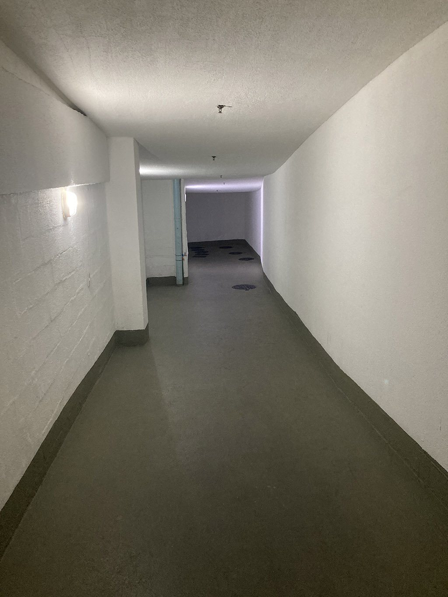

Entrada de serviço
Área de circulação intensa utilizada diariamente por moradores, colaboradores, prestadores de serviço, pets, entregas e coleta de resíduos. Apesar de sua importância operacional, o espaço hoje transmite sensação excessivamente técnica e pouco acolhedora para um condomínio residencial frente-mar.

Proposta de organização e acabamento da entrada de serviço.
Clique aqui para ver a imagem maior

Situação atual da entrada de serviço.
Clique aqui para ver a imagem maior
Leitura do estudo
O estudo propõe uma requalificação visual simples, mais organizada e agradável, buscando melhorar a experiência de passagem sem comprometer funcionalidade, limpeza e manutenção. Também foi sugerida ao Hiperideal uma possível colaboração na revitalização do espaço, iniciativa que ainda aguarda retorno e avaliação de viabilidade.
A proposta deve ser avaliada com critério: custo, manutenção, segurança, impacto nos moradores, compatibilidade com a arquitetura existente e necessidade de aprovação formal.